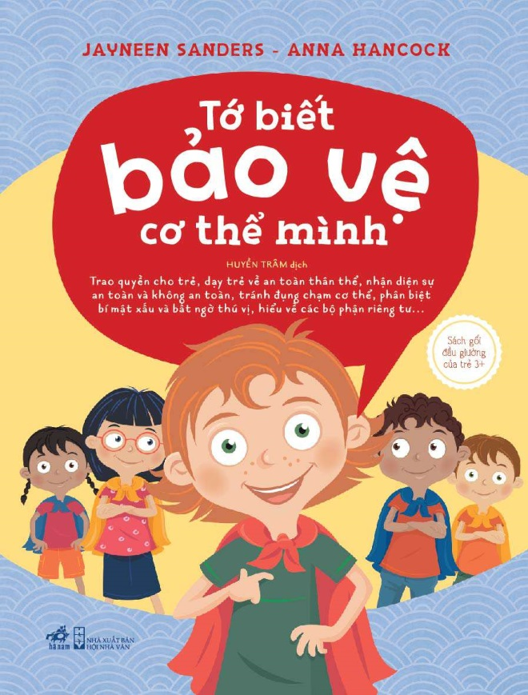

Hiện nay vấn nạn xâm hại trẻ em vẫn xảy ra ở nhiều nơi trên toàn thế giới. Ở Việt Nam, trong thời gian gần đây, xảy ra hàng loạt vụ việc xâm hại tình dục trẻ em gây bức xúc dư luận và gây hoang mang cho nhiều bậc phụ huynh. Do đó, việc trang bị kĩ năng sống, kĩ năng phòng vệ cá nhân là rất cần thiết cho các em. Vậy, những dấu hiệu trẻ bị xâm hại tình dục ra sao? Cần trang bị những kĩ năng phòng vệ cho trẻ như thế nào là điều mà Nhà trường và các gia đình hết sức quan tâm.Cuốn sách “Tớ biết bảo vệ cơ thể mình”do hai tác giả Jayneeen Sanders và Anna Hancock viết và được Huyền Trâm dịch đã nêu chi tiết và toàn diện các khía cạnh xoay quanh an toàn thân thể của trẻ. Với thực trạng ấy, Nhà trường và các tổ chức xã hội đã tổ chức các buổi tuyên truyền nhằm nâng cao hiểu biết và trang bị kiến thức, kĩ năng để hướng dẫn các em chủ động phòng chống nạn xâm hại tình dục. Các bậc phụ huynh cũng rất chú trọng việc dạy cho con em mình kĩ năng phòng tránh xâm hại ngay từ khi trẻ còn nhỏ để có thể hạn chế tối đa nguy cơ trẻ bị lạm dụng. Tùy theo độ tuổi và sự hiểu biết của các bé mà cha mẹ có thể dạy những kĩ năng dù đơn giản nhất nhưng vẫn có thể tạo được hiệu quả giúp các bé tự bảo vệ mình. Nhiều bậc phụ huynh lựa chọn trang bị cho trẻ kĩ năng phòng tránh xâm hại bằng cách cho trẻ đọc sách. Để bảo vệ cũng như dạy cho trẻ cách tự vệ và phòng chống xâm hại, rất nhiều cuốn sách đã dạy cho trẻ những kĩ năng này.Ví dụ như bộ sách An toàn cho con yêu gồm bảy cuốn: Không là không, Trai hay gái chúng mình chẳng khác nhau, Con học cách tự vệ, Tớ biết bảo vệ cơ thể mình, An toàn cho con yêu, Bí mật rất cần bật mí, Thuyền trưởng cướp biểncủa nhiều tác giả khác nhau đã được nhiều bậc phụ huynh quan tâm và cùng con tìm hiểu. Tôi cũng được bố mẹ tìm mua cho bộ sách này. Sau khi đọc hết bộ sách, tôi đã có thêm nhiều hiểu biết và kĩ năng phòng chống xâm hại. Các tình huống hàng ngày được vẽ lại một cách sinh động, dạy trẻ nhận biết cơ thể mình, tự bảo vệ mình. Cuốn sách này đã giúp tôi hiểu được những vấn đề cốt lõi về an toàn thân thể, nắm rõ hơn các kĩ năng tự bảo vệ mình.  Xuyên suốt cuốn sách là lời nhắc nhở các bạn nhỏ phải thổ lộ bí mật khó chịu cho những người lớn đáng tin cậy quanh mình. Cuốn sách được chia làm 5 chương.Chương thứ nhất là “CẢM GIÁC AN TOÀN”.hắc hẳn ai cũng có cảm xúc riêng của mình. Bạn cảm thấy vui vẻ, sợ hãi, tức giận, tự hào,.... bao giờ chưa? Còn đã khi nào bạn cảm thấy bất an, khó chịu chưa? Đó cũng chính là vấn đề của Izzy - một bạn gái trong truyện. Khi Izzy đang chơi trong vườn hoa, có hai anh chị thanh niên đến gần và rủ Izzy đi chơi trong khi mẹ của bạn ấy đang nói chuyện cùng mấy cô chú. Nếu là bạn, bạn sẽ làm gì? Còn bạn Izzy cương quyết không đi theo và chạy ra chỗ mẹ bạn ấy và kể lại hết mọi việc cho mẹ nghe. Khi cảm thấy bất an, cơ thể sẽ dự báo cho bạn như : - Trán, tay ướt đẫm mồ hôi - Nổi da gà, gai ốc - Tim đập thình thịch Chương thứ nhất đã giúp tôi đã hiểu được những dấu hiệu khi mình cảm thấy bất an và quan trọng là phải báo ngay cho những người đáng tin cậy. Chương tiếp theo là “THIẾT LẬP MẠNG LƯỚI VỆ SĨ AN TOÀN".Ví dụ mạng lưới vệ sĩ an toàn của Izzy gồm năm người là: bố, mẹ, chú, bà ngoại, cô giáo. Bạn sẽ nói với họ mọi chuyện và họ luôn tin bạn. Còn bản thân tôi, mạng lưới an toàn của tôi gồm: bố, mẹ, ông ngoại, bà ngoại và cô giáo. Đây là những người mà tôi hoàn toàn tin tưởng, có thể chia sẻ mọi điều bí mật. Khi tôi lo lắng, sợ hãi hay khó chịu, tôi sẽ nói rõ với họ cảm giác đó và vì đâu tôi có cảm giác đó. Chương thứ ba “VÙNG RIÊNG TƯ LÀ CỦA RIÊNG TỚ”.Bạn không cho phép ai bắt bạn đụng chạm vào vùng riêng tư của họ và cũng không cho họ chạm vào vùng riêng tư của bạn. Không được xem các tranh ảnh về vùng riêng tư. Nếu xảy ra những việc như thế, bạn hãy nói to rõ ràng, giơ tay ngăn chặn: “Dừng lại ngay, tôi không muốn thế”, và sau đó báo ngay với những người trong mạng lưới vệ sĩ an toàn. Nhưng đôi khi, nếu bạn bị ốm, bác sĩ sẽ phải kiểm tra, có khi còn phải chạm vào vùng riêng tư của bạn. Đây là việc được phép nếu có mặt cả bố, mẹ bạn ở trong phòng khám. Chương thứ tư“ĐIỀU THÚ VỊ BẤT NGỜ KHÁC VỚI BÍ MẬT XẤU XA”.Thú vị bất ngờ khiến bạn vui vẻ, bật cười và bạn sẵn sàng kể lại cho người khác. Còn bí mật xấu xa sẽ khiến bạn khổ sở, đặc biệt là khi có ai đó ép bạn giữ kín trong lòng. Đó là lí do vì sao bạn không nên giữ các bí mật với mọi người trong gia đình. Khi ai đó ép bạn phải giữ bí mật, hãy nói thẳng cho họ rằng bạn không thích. Khi đọc xong chương này, tôi hiểu ra một điều rằng, không bao giờ nên giữ bí mật ở trong lòng, cả niềm vui hay sự lo lắng. Và những người trong mạng lưới vệ sĩ an toàn chính là những người đáng tin cậy để tôi chia sẻ mọi điều. Và chương cuối cùng là Và chương cuối cùng là “BONG BÓNG BẢO VỆ”.Mọi người đều có một bong bóng bảo vệ vô hình quanh cơ thể mình. Vô hình nghĩa là ta không thể nhìn thấy nó, nhưng nó vẫn tồn tại. Bong bóng bảo vệ nghĩa là ranh giới riêng tư hoặc không gian riêng tư. Khi bạn không muốn những người khác xâm phạm vào bong bóng bảo vệ cơ thể bạn, nếu bạn không muốn ôm hôn ai đó, bạn hãy nói đàng hoàng “Cháu không thích” rồi đập tay hoặc bắt tay lịch sự với họ là được. Khi đọc đến đây, tôi mới thực sự hiểu rằng: bản thân mình, cách ứng xử của mình, kĩ năng tự bảo vệ mình mới chính là điều quyết định khi gặp những tình huống xấu và bất ngờ đến với mình. Qua năm chương, toàn bộ thông điệp mà hai tác giả muốn gửi gắm đến các bạn nhỏ được truyền tải một cách ngắn gọn, dễ hiểu mà hiệu quả vô cùng. Song song với việc cập nhật kiến thức, tác giả còn đưa ra những câu hỏi thảo luận giúp phụ huynh và trẻ luyện tập, thực hành tốt các bài học. Sách còn hướng dẫn các bậc phụ huynh nên đọc và tìm hiểu sách trước để biết cách nói chuyện sao cho con mình dễ hiểu nhất về an toàn thân thể và cảm giác an toàn và bất an,... Các câu hỏi có thể là câu hỏi đóng hoặc là câu hỏi mở, để phụ huynh và con cùng bàn thảo tìm ra cách giải quyết phù hợp với từng gia đình. Những thảo luận dù ngắn dù dài nên được duy trì đều đặn trong gia đình từ khi các con còn nhỏ cho đến khi con trưởng thành, để gây dựng sự tin cậy bền vững giữa các thành viên trong gia đình. Cuốn sách “Tớ biết bảo vệ cơ thể mình” thực sự là một cuốn sách hay, cung cấp được những kiến thức, kĩ năng phòng tránh xâm hại trẻ em vừa gần gũi, thực tế mà lại cho hiệu quả cao đối với trẻ em. Sách được in màu, hình vẽ minh họa đơn giản, dễ hiểu là kênh hình góp phần làm nên hiệu quả của kênh chữ. Với những kiến thức và kĩ năng tôi đã lĩnh hội được qua cuốn sách, tôi thực sự mong muốn cuốn sách được nhiều bạn nhỏ biết đến. Và cũng như tôi, sau khi được tiếp cận và đọc sách, các bạn sẽ có những kiến thức và kĩ năng cần thiết để tự bảo vệ bản thân. Tôi mong muốn tất cả trẻ em trên thế giới này đều có cuộc sống hạnh phúc với nụ cười rạng rỡ trên môi.